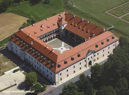
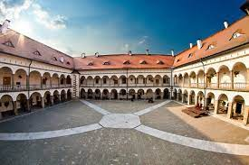
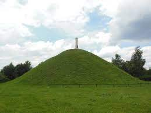
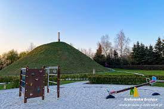
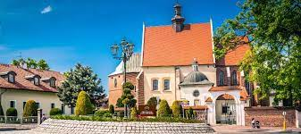
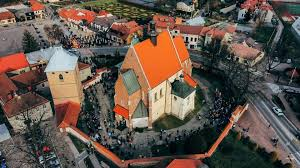
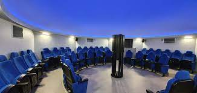
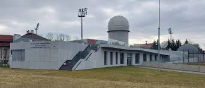
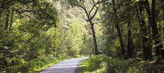
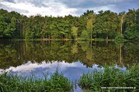

Jakie rozrywki i atrakcję zawiera niepołomice?
Oto kilka ciekawych miejsc w Niepołomicach 😁
1.Zamek w Niepołomicach
Ta architektoniczna perełka znana jest również jako drugi Wawel i została wzniesiona za panowania Kazimierza Wielkiego w stylu gotyckim.
Jednak w późniejszych latach przeszła przebudowę w stylu renesansowym.
Zamek Królewski znajduje się w samym centrum Niepołomic, tuż obok Rynku, przy historycznych plantach.
Przez wieki pełnił funkcję królewskiej rezydencji wypoczynkowej dla monarchów z dynastii Piastów, Jagiellonów oraz władców elekcyjnych.
Obecnie jest uznawany za jedną z najpiękniejszych budowli renesansowych w Polsce, a jego powstanie można przypisać Tomaszowi Grzymale oraz włoskiemu rzeźbiarzowi Santiemu Gucci.
Zamek został zbudowany na planie czworoboku, z obszernym dziedzińcem przypominającym niemal kwadrat oraz krużgankami.


2.Kopiec Grunwaldzki
Kopiec został wzniesiony na miejscu znanym jako Wężowa Góra.
Pierwotnie na tym miejscu stał krzyż, upamiętniający prześladowania dzieci z Wrześni.
Dopiero w 1910 roku członkowie Towarzystwa Gimnastycznego "Sokół" podjęli decyzję o zbudowaniu kopca upamiętniającego 500. rocznicę zwycięstwa pod Grunwaldem.
Przez pięć lat (1910-1915) Polacy z wszystkich trzech zaborów brali udział w jego konstrukcji.
Na szczycie kopca znajduje się kamienny obelisk z napisem: "Grunwald 1410 - 1910".
Według legendy w okolicach Wężowej Góry znajduje się ukryte wyjście tajnego korytarza, prowadzącego do zamku w Niepołomicach.
Obok kopca znajduje się plac zabaw.


3.Kościół pw. Dziesięciu Tysięcy Męczenników
Obowiązkowym punktem do odwiedzenia w Niepołomicach jest kościół parafialny pw. Dziesięciu Tysięcy Męczenników.
Ta świątynia jest najstarszym zabytkiem miasta i ma już ponad 650 lat!
Na pierwszy rzut oka zauważymy, że kościół jest połączeniem różnych stylów architektonicznych, a otacza go imponujący mur obronny.
Wnętrze kościoła zachwyca pięknymi freskami, a szczególnie ważnym obrazem jest wizerunek św. Karola Boromeusza.
Podczas zwiedzania warto zwrócić uwagę także na rzeźbiony nagrobek Branickich, umieszczony w bocznej kaplicy.


4.Obserwatorium Astronomiczne w Niepołomicach
Młodzieżowe Obserwatorium Astronomiczne to niezwykły obiekt na mapie Małopolski.
To właśnie tutaj w prosty sposób możemy zgłębiać tajemnice wszechświata, uczestniczyć w prelekcjach,
warsztatach,podziwiać rozgwieżdżone niebo oraz nawet skorzystać z możliwości noclegu.
Obserwatorium nosi imię Kazimierza Kordylewskiego, znanego odkrywcy pyłowych księżyców Ziemi.


5.Puszcza Niepołomicka – szlaki piesze i rowerowe
Puszcza Niepołomicka to imponujący kompleks leśny o powierzchni 11 tysięcy hektarów, który obejmuje także kilka rezerwatów przyrody.
Nazwa puszczy jest związana z terminem "niepołomny", co oznacza trudny do zagospodarowania i niedostępny.
Ogromny obszar puszczy zachęcał do polowań, dlatego miejscem tym często odwiedzali wszyscy władcy Polski.

